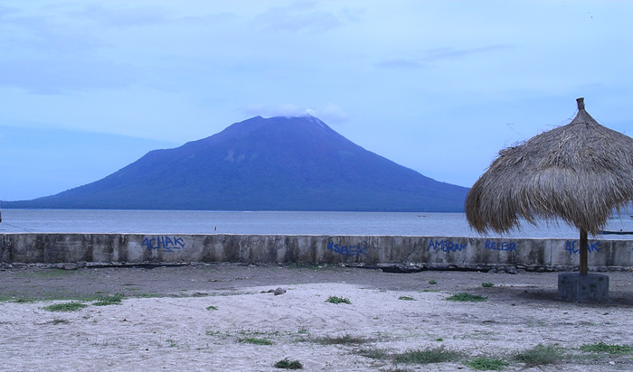
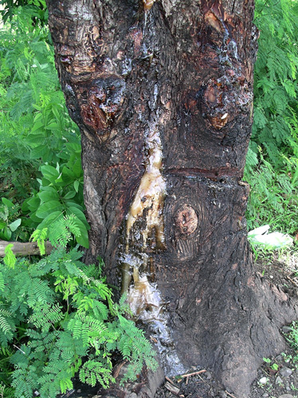
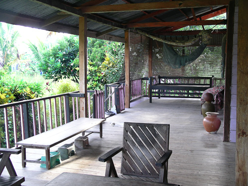
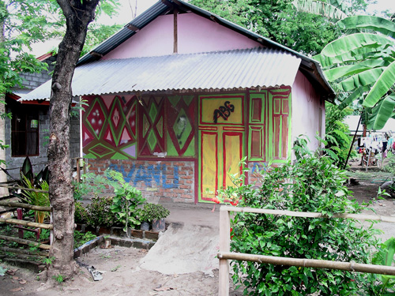
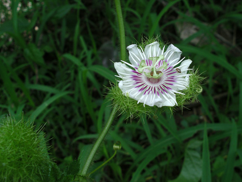
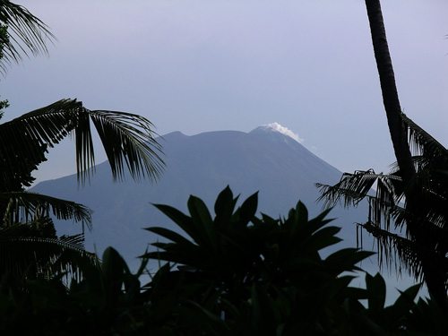
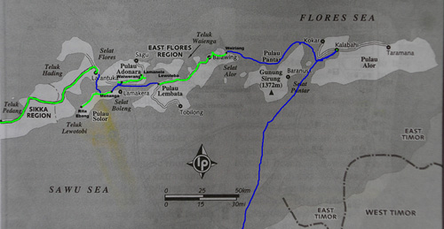

Indonesia Trav-E-Logs ©
Lewoleba, Lembata Island, Solor Archipelago
|  | |
| back: Adonara | View of Ile Ape when walking from Lewoleba port into town. |
================================= Stretching east from Bali is a string of islands that form the Province of Nusa Tenggara. From Bali, they are Lombok, Sumbawa, Komodo and Rinca*, Flores, and then the Solor and Alor Archipelagos. South of the last three are the islands of Sumba and Timor. Lembata Island is the farthest east of the Solor Archipelago. =================================
January, 2007
|
After an uneventful 2-hour boat ride from Waiwerang, Adonara to Lewoleba, it felt good not having to wade through seawater to get to shore. At the end of the port area was a little park with thatched-roof resting areas, and the view of Ile Ape* was too good to resist taking the one-hundredth photo of this majestic smoker. Continued the short walk towards town, giving my legs the stretching and exercise they were screaming for. Found the Lile Ile guesthouse located behind a concrete-culvert fabrication operation next to a petrol station. Once you stumble through the industrial driveway, the guesthouse setting is idyllic. It's waterfront property, but the shallow water is filled with mangrove trees, and the shore lined with palms. A large rustic common area affords beautiful views of the garden and Ile Ape through a break in the trees. The owner is Dutch, but his heritage is Indonesian, so sees many things with a blend of Asian and Western eyes. He has put together a very nice booklet with tourist information about transportation schedules, maps, traveler's advice, and lots of local interest items. Being the only guest in low season, no meals were offered, but the owner was helpful with news and explanations. An aircraft disappeared near Sulawesi, on route from Java to Manado. Pelni's Awu -- the ship I used from Makassar, is broken down. Now during the wet season, boats do not often make the run from Lembata to Alor. The only way to find out is travel to Balauring or Wairiang and ask and wait. Took short bike trips around town and into the countryside, noting a wild flowering vine that reminds me of Clematis. Also took note of a type of tree along the road that oozes sap -- buckets of the sticky stuff. As always, took more photos of the houses people live in. Then decided it was time to see if Alor was in my future. If no boat will run to Kalabahi, backtracking all the way to Larantuka will be necessary. Timing is also critical, as the Pelni ship to Kupang leaves Kalabahi on Alor in just four days. Photos, clockwise from the top right: Lile Ile veranda and common area; Lewoleba Home; Wild Flowering Vine; Ile Ape from the Veranda; Marked up Lonely Planet Map; Sap Oozing from Tree.  |     
|
Bill
------------------------------
Email me at: "juno.com" preceded by an "@" and "dancer2SEAsia"
"The backpacker discovers people are beautiful everywhere. It's the Governments that are evil."
| next: Wairiang |
| back: Adonara |